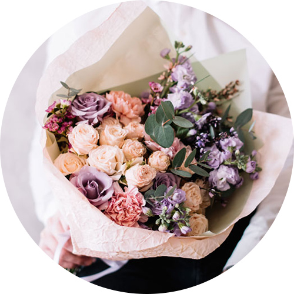

GIFT
なんでも、どこでも手に入る時代です。
買ってしまえば簡単で、新しいものが出ればすぐに飽きてしまう。
だからこそ、ここだけのもの、ここだけの体験にこだわります。
ブーケに想いも一緒に束ねて
ブーケやコサージュ、花冠の
手作りワンデーレッスンを行っています。
お好きな花を自由に選んで、
イメージにあった作品をお作りください。
レッスンは営業日の11時から、14時からの2クラスです。
お花選びに時間がかかりそうな場合や、
製作時間の長い作品をお作りになる場合は
14時からのクラスをお勧めします。
通常、1回のレッスンで1つの作品が完成します。
（作品や個数によっては2回以上になる場合もあります）
製作に必要なものはすべてこちらで
ご用意しておりますが、
イメージ写真、イラスト、当日着るドレスなどの写真
がありましたらぜひお持ちください。
ブーケ
製作費の目安( 材料+レッスン料込み) ：
約15,000円〜25,000円 （税別）
製作時間 ：約3時間
アトリエ内のお好きな花やリボンを選んで
作成していただきます。
新郎様、お母様、ご友人とのご参加も可能です。

コサージュ
製作費の目安(材料＋レッスン料込み)：
約3,000円〜5,000円（税別）
製作時間：2時間
花冠や小物
製作費の目安：10,000円〜、
レッスン料¥3,000＋材料費別（税別）
製作時間：2時間〜
ブライダルで人気の花冠。
その他にも髪飾りやペット用のアクセサリーなど
なんでもご相談ください。
お好きな花やリボンを自由に選んで、
ご自身のイメージやサイズに合ったものを
お作りいただけます。
手作りワンデーレッスンをご予約の方は、 お問い合わせフォームより
『 ご希望日・レッスン・ご希望時間・人数・ご予算・どんな物を作りたい（色やイメージ）』
をご記入の上ご連絡ください。
お返事に日数をいただく場合がありますのでご了承ください。
ご予約は、電話でも承っております。
特別な日を飾るお花ですから、 納得のいく作品をお作りいただけるよう、
レッスン前の打ち合わせを大切にしています。
疑問やご相談もお気軽にお問い合わせください。
※メールでのご連絡の場合、早急な対応ができないため、お急ぎの場合は必ずお電話でお願い致します。
Filer Doucement's Instagram Gallery
ブーケやコサージュの写真はこちらでご覧ください。